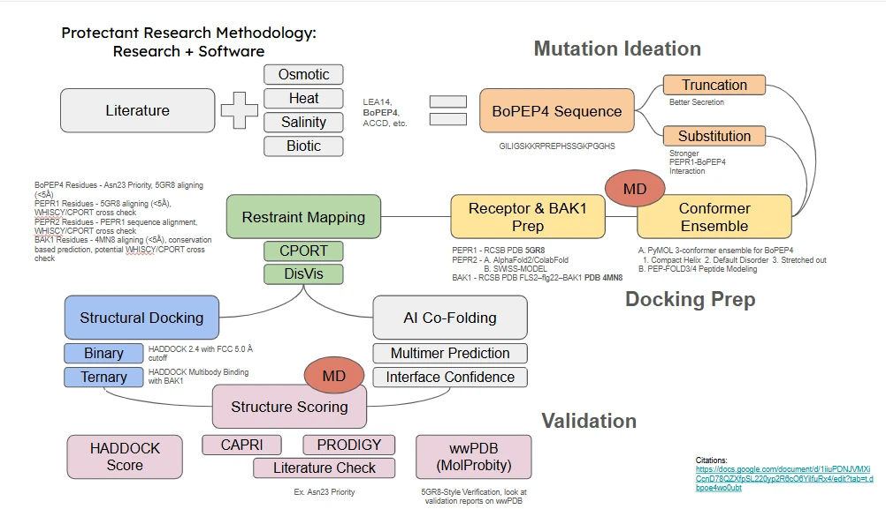

Method pages
This section describes the process, not the results. Every page in it is a method page. It says what was done, on what input, under what assumption, and what the answer was allowed to settle. The numbers those methods produced live in two places that were written first and are linked from here: Peptide Design, which runs BoPep4 end to end and carries the ledger of what we later took back, and MD Simulations, which holds nine trajectories and their reports.
The separation is deliberate. A method can be judged before anyone knows what it returned, and several of ours do not survive that reading. Where a step could not decide the thing it was built to decide, the page for that step says so in its own voice instead of leaving the reader to work it out from a results table.
The section also carries gaps. Nineteen of the outline's subsections have no written source yet. Each one appears in the place it belongs, with a note saying what goes there and what evidence would close it, in the shape the Engineering page uses. Nothing is filled in with plausible method prose to hide a hole.
Secretion and production
ReLeaf competes in the Biomanufacturing Village, and the village sets the question the design has to answer. A protectant that binds its receptor beautifully and never leaves the cell is not a product. So every design axis in this section was judged on two axes at once: whether the receptor still reads the molecule, and whether Bacillus subtilis can make it, export it and keep it intact in a protease-rich supernatant.
That constraint is why the section ends at an order form rather than at a docking pose. The truncation work exists because a shorter chain is cheaper to synthesise and export. The codon work exists because a sequence the receptor accepts is worth nothing if the chassis will not initiate translation on its messenger RNA. The tag geometry question, which cost the project a DNA order in August, is a secretion question that turned out to be a binding question.
Focus on BoPep4
Four protectant families were on the table at the start of the year and one of them took nearly all of the modelling effort. The reasons, as far as they are written down, are these. BoPep4 sits in the PROPEP family, whose members are read by the same pair of receptor kinases, so a receptor model built for one candidate is worth something for the others [3]. The family has a solved complex, PDB 5GR8, which fixes the binding register instead of asking a prediction to guess it [1]. And it has a published structure to activity series, Pearce 2008, which is the only dataset in reach that can tell a scoring function it is wrong [2].
Those three are conditions for doing the work at all. None of them is a reason to prefer BoPep4 over the LEA family on the biology, and the section does not pretend otherwise.
The outline asks why did we focus on BoPep4 the most
and no document answers it. The honest current answer is that the peptide was tractable, not that it was shown to be the better protectant. Closing this needs one of two things: a written record of the decision meeting where the effort was allocated, or a side-by-side statement of what each candidate would have cost to model and what each would have returned. Neither exists in the source folder.
The GRAFT pipeline
The workflow was drawn before it was written, and the drawing is still the clearest statement of it. Literature and a stress protectant scan feed a candidate sequence; the sequence feeds mutation ideation on three axes; restraint mapping and a conformer ensemble feed docking; docking feeds molecular dynamics and structure scoring; scoring feeds a verdict that is checked back against the literature.

Read as an acronym, the method names spell the order they run in. That is the spine this section is built on, and each letter is a page.
Decides which molecule is worth modelling, and which of its residues are allowed to change.
Framework R RestraintsDecides what the docking is permitted to assume before it starts searching.
Framework A AssemblyDecides how a two-body model becomes a three-body signalling complex.
Framework F FlexDecides whether a pose survives being shaken, or only survives being scored.
Written T TriageDecides which models are kept, and admits which of those decisions the score could not make.
Framework · PackagingDecides what a surviving design looks like as DNA the chassis will translate and export.
FrameworkPackaging falls outside the acronym, and the card shows it that way on purpose. It is the step that turns a model into something a wet lab can hold, and it is the only step in this section whose output has left the building.
Limits of this section
Three standing limits apply to every page below, and they are stated once here so no page has to relitigate them.
The docking score
A HADDOCK score difference is never used on this wiki as evidence that one design binds better than another. Re-running the same complex at a different random seed moves the score by 13 to 36 units, which is larger than any difference this project ever reported. Of the 121 docking runs on record, 113 begin from the pose they are meant to be testing and take their restraints from that same pose, so they cannot reject their own input. And the one benchmark with measured activity attached, the sixteen equal-length analogues in Pearce 2008, returns a rank correlation of about +0.05 at p > 0.8 [2]. Triage works through all three in detail, because that page exists to say what the scoring step could not do.
Withdrawn claims
An audit of the docking pipeline on 30 July, and a structural review on 16 August, retracted five claims the project had made. They are listed with their evidence in the ledger on Peptide Design, and they do not reappear anywhere in this section. One of them, K18R as an affinity lead, was pulled out of a DNA order on the morning it was due to ship.
No plant evidence
Neither BoPep4 nor LEA14 has been applied to a plant by this team. Every statement in this section is about a molecule, a model or a sequence. The assay that would test any of it is on the wet lab's list and has not run.
Future work
Co-immunoprecipitation
Everything in this section that concerns the ternary complex rests on structural compatibility: BAK1 can be placed against a PEPR1 and BoPep4 model without clashing. That is a statement about geometry and it cannot become a statement about association without a physical pull-down. Co-immunoprecipitation of a tagged receptor from tissue treated with the peptide is the experiment that would do it, and it is the one that would turn the Assembly page from a modelling exercise into a claim.
No protocol, antibody or tissue source has been chosen for this. It needs a tagged PEPR1 construct, a plant system that expresses it, and an antibody pair, none of which the project holds.
Receptor abundance model
A docking model treats the receptor as present. A field does not. The proposal is to read PEPR1 transcript abundance out of ePlant [4], which aggregates Arabidopsis expression data across tissues and treatments, and use it to ask a question this section never asks: at what applied concentration does the peptide stop being limited by its own affinity and start being limited by how much receptor is on the surface of a leaf. That number would set the dose the bioreactor has to deliver, which is the link between this section and Math Model.
This is a written intention and nothing else. There is no extracted expression table, no chosen tissue or stress condition, and no statement of how a transcript level would be converted into a surface receptor density. The first step is small: pull PEPR1 and PEPR2 expression for leaf tissue under salt treatment, and see whether the data is even resolved enough to carry the argument.
References
- Tang, J., Han, Z., Sun, Y., Zhang, H., Gong, X. & Chai, J. Structural basis for recognition of an endogenous peptide by the plant receptor kinase PEPR1. Cell Research 25, 110–120 (2015). PDB 5GR8.
- Pearce, G., Yamaguchi, Y., Munske, G. & Ryan, C. A. Structure–activity studies of AtPep1, a plant peptide signal involved in the innate immune response. Peptides 29, 2083–2089 (2008).
- Yamaguchi, Y., Huffaker, A., Bryan, A. C., Tax, F. E. & Ryan, C. A. PEPR2 is a second receptor for the Pep1 and Pep2 peptides and contributes to defense responses in Arabidopsis. Plant Cell 22, 508–522 (2010).
- Waese, J. et al. ePlant: visualizing and exploring multiple levels of data for hypothesis generation in plant biology. Plant Cell 29, 1806–1821 (2017).
Each step page carries the references its own method rests on: the docking and clustering papers on Assembly, the interface and validation tools on Triage, the alignment and family literature on Generate, and the translation and secretion papers on Packaging.